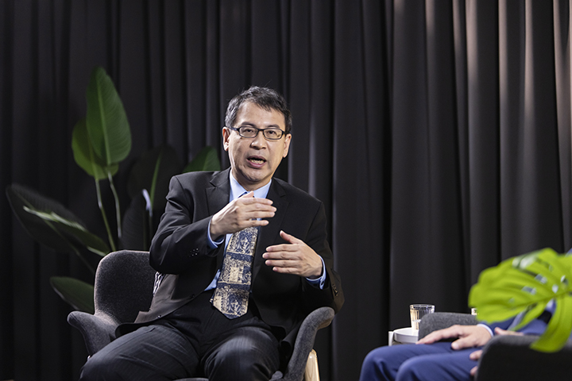
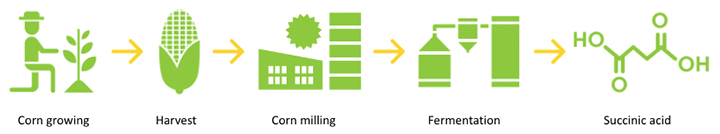
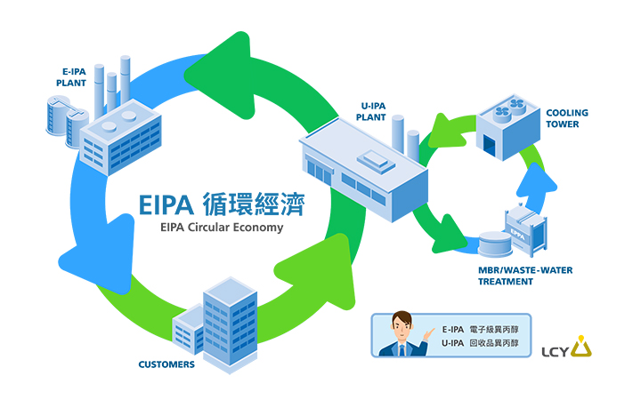

李長榮打造減碳企業競爭力
各國相繼宣布碳中和目標，成為全球趨勢已勢不可當，也將為石化產業帶來前所未有的巨大挑戰。有鑑於此，對於台灣如何跟進全球步伐，行政院能源及減碳辦公室副執行長林子倫與李長榮化工總經理劉文龍也有不同見解。
全球陸續有超過130個國家宣示2050達到碳中和目標，歐盟也在今年七月宣布碳邊境調整機制(CBAM，碳關稅)。全球競逐「碳中和」，將為支撐台灣民生與高科技產業重要根基的石化產業，帶來哪些巨變？行政院能源及減碳辦公室副執行長林子倫與李長榮化工總經理劉文龍，也個別分享分享碳中和趨勢將如何加速石化業升級成為高值化產業，並讓碳中和轉變成為企業的核心競爭力。
石化企業加速轉型 碳中和變成核心競爭力
「我認為CBAM對全球是產生很大的衝擊，等於把我們過去的碳有價化，已經更具體的落實在這個政策上，形成另外一種所謂碳的貿易關稅壁壘，有可能形成另外的貿易衝突，這都值得再觀察。」行政院能源及減碳辦公室副執行長林子倫針對全球一致認同碳中和為勢在必行的觀點，則提出他的看法，現在世界各國很多公司，其實已經實施內部所謂碳定價概念，最重要的關鍵是心態，它不再只是一個過去，不只是社會責任，現在變成是一個競爭力，而且改變整個決策思維。
逾十年前就開始投入碳中和佈局的李長榮化工，不僅讓碳中和變成企業競爭力，也正在加速公司轉型。李長榮化工總經理劉文龍指出，「李長榮其實持續投入綠色的產品開發、降低對石化原料的依賴，透過商業的力量跟來保護地球。」
以李長榮研發的生質琥珀酸為例，它的原料是來自玉米糖漿，經過微生物分解的發酵製程，產生化學品，百分之百純天然。往下游材料可以做成生質塑膠；在土壤、在海洋裡都可以百分之百分解，不會對地球產生負擔。「生質琥珀現在最大的應用，是在紙杯內部的淋膜；生質琥珀還有一個很重要的應用就是鞋材，也希望能夠把生質琥珀酸應用在它的鞋材裡面，達到減碳的效果。」劉文龍透露李長榮生質琥珀酸的最新應用動態。
LCY Biosciences 制程方式：以不同酵母菌製造不同的產品
無庸置疑的是，高科技材料的回收與再利用技術開發，勢必面臨極大挑戰。過程中，李長榮科技也戮力克服這些關卡。林誠偉分享三個例子說，首先，李長榮科技使用100％回收與再循環的銅線作為原材料，因此我們的來源100％不是來自任何礦山，對環境的影響為零；第二，是在產品設計和製程中，使用危害較小且更環保的成份和化學物質，包括生物基添加劑；第三，過去12個月分別減少約7％和10％的能源和水消耗，還能將我們的廢污泥減少33％以上。
迎接淨零趨勢 「循環經濟」角色舉足輕重
林子倫呼應李長榮的綠色理念，，表示碳中和跟循環經濟是兩股非常新的潮流，現在結合在一起，是非常好的加成，像是李長榮的生質材料，從材料製程介入，包含它最後的碳足跡，幾乎都回到自然的環境裡面，我覺得這就是一個很棒的案例。今日的共享經濟，比如共享汽車，共享家具、共享的各類產品，它就跟循環經濟的概念一樣，讓物質可以使用的生命週期變大。」這樣的概念也於李長榮的EIPA（電子級異丙醇）化學品租賃吻合，導入循環經濟的「產品服務化」概念。
化工產業如何讓產品服務化？以李長榮化工很重要的循環經濟產品——半導體的化學品EIPA為例，李長榮會回收來做雙循環的使用，開創「以使用取代購買」的新商業模式。以往運用半導體清洗製程中的異丙醇，傳統都直接將廢液直接焚化，而李長榮的雙循環系統，讓異丙醇和水可以不斷循環再生。「一個循環是把異丙醇再精製純化，純化到半導體業可以再使用的同級化學品；另一方面把廢水也回收，，過濾雜質與透過生物反應處理，在我們工廠內部再使用，不浪費地球任何一滴資源。」劉文龍胸有成竹地說。
隨著國際碳關稅陸續上路，產業供應鏈的碳足跡將會受到更嚴格的檢視。在這場「碳中和」賽跑中，身為產業鏈最上端的李長榮，積極降低對石油的依賴，將外界眼中的危機化為新機會，將永續目標落實在公司的研發動能、營運方針與人才管理，視減塑、減碳為己任，提供永續循環材料解決方案，用商業力量找到平衡。